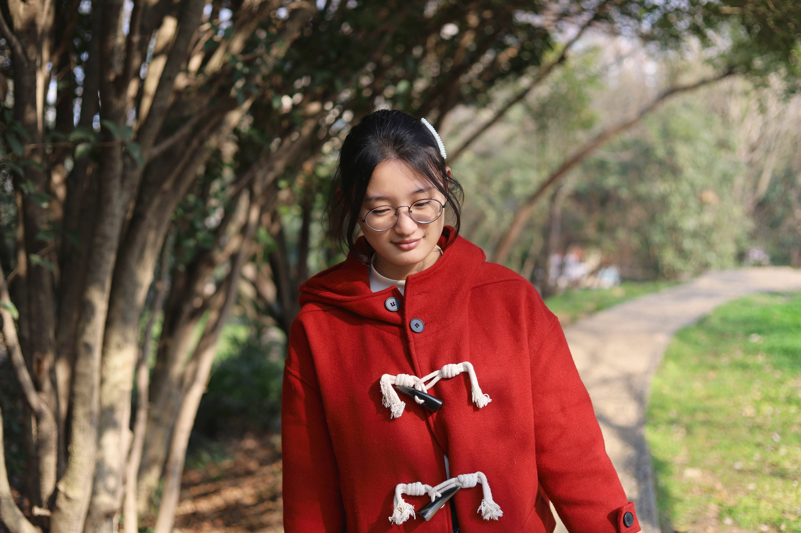

Xiuying Chen
Computer Sciences
|
 |

About me
I am a CS PhD student at the KAUST beginning from 2021. My supervisor is Prof. Xiangliang Zhang and Prof. Xin Gao.
Prior to KAUST, I got my B.S degree in Computer Science at Wuhan University supervised by Prof. Qian Wang and my M.S degree in Peking University, supervised by Prof. Rui Yan and Prof. Dongyan Zhao.
My research interests include Summarization, Dialog System, and Text Generation. I also have broad interests in history, literature, films, and music.
Selected Publications (Full List)
-
Learning towards Selective Data Augmentation for Dialogue Generation
Xiuying Chen, Mingzhe Li, Jiayi Zhang, Xiaoqiang Xia, Chen Wei, Jianwei Cui, Xin Gao1, Xiangliang Zhang, Rui Yan.
Accepted by the Thirty-Seventh AAAI Conference on Artificial Intelligence (AAAI 2023)Scientific Paper Extractive Summarization Enhanced by Citation Graphs
Xiuying Chen, Mingzhe Li, Shen Gao, Rui Yan, Xin Gao, Xiangliang Zhang.
Accepted by The 2022 Conference on Empirical Methods in Natural Language Processing (EMNLP 2022)Towards Improving Faithfulness in Abstractive Summarization
Xiuying Chen, Mingzhe Li, Xin Gao, Xiangliang Zhang.
Accepted by the Thirty-sixth Conference on Neural Information Processing Systems (NeurIPS 2022) [Code]Follow the Timeline! Generating Abstractive and Extractive Timeline Summary in Chronological Order
Xiuying Chen, Mingzhe Li, Shen Gao, Zhangming Chan, Dongyan Zhao, Xin Gao, Xiangliang Zhang, Rui Yan.
Accepted by the ACM Transactions on Information Systems (TOIS 2022) [Code]Target-aware Abstractive Related Work Generation with Contrastive Learning
Xiuying Chen, Hind Alamro, Mingzhe Li, Shen Gao, Rui Yan, Xin Gao, Xiangliang Zhang.
Accepted by the 45th International ACM SIGIR Conference on Research and Development in Information Retrieval (SIGIR 2022) [Code]Capturing Relations between Scientific Papers: An Abstractive Model for Related Work Section Generation
Xiuying Chen, Hind Alamro, Mingzhe Li, Shen Gao, Xiangliang Zhang, Dongyan Zhao, Rui Yan.
Accepted by the Joint Conference of the 59th Annual Meeting of the Association for Computational Linguistics and the 11th International Joint Conference on Natural Language Processing (ACL 2021) [Data]Reasoning in Dialog: Improving Response Generation by Context Reading Comprehension
Xiuying Chen, Zhi Cui, Jiayi Zhang, Chen Wei, Jianwei Cui, Bin Wang, Dongyan Zhao, and Rui Yan
Accepted by the Thirty-Fifth AAAI Conference on Artificial Intelligence (AAAI 2021) [Data]Learning towards Abstractive Timeline Summarization
Xiuying Chen, Zhangming Chan, Shen Gao, Meng-Hsuan Yu, Dongyan Zhao, Rui Yan.
Accepted by the 28th International Joint Conference on Artificial Intelligence (IJCAI 2019) [Code]Iterative Document Representation Learning Towards Summarization with Polishing
Xiuying Chen, Shen Gao, Chongyang Tao, Yan Song, Dongyan Zhao, Rui Yan.
Accepted by the the 2018 Conference on Empirical Methods in Natural Language Processing (EMNLP 2018) [Code]
Research Experience
- Mentor: Chongyang Tao
May, 2022 - October, 2022, Beijing, China
Research Intern | Xiaomi
- Mentor: Jianwei Cui
January, 2020 - December, 2020, Beijing, China.
Research Intern | IIAI
- Mentor: Li Liu
March, 2019 - October, 2019, Abu Dhabi, United Arab Emirates.
Research Intern | Microsoft
Selected Awards
Dean's List Award, KAUST, 2021-2022
Outstanding Graduate, Beijing, 2021
National Scholarship, Peking University, 2019-2020
Merit Student, Peking University, 2019-2020
National Scholarship, Wuhan University, 2017-2018